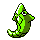

#030
Metapod
Bug
Shed SkinMay heal its own status problems.
Shield DustBlocks the added effects of moves.
Base stats Total 205
HP50
Attack20
Defense55
Speed30
Sp. Atk25
Sp. Def25
Evolution
Evolves from Caterpie — Level 10
Training & breeding
- Catch rate
- 120 / 255
- Base experience
- 72
- Wild held items
- None
- Gender ratio
- 50% male, 50% female
- Egg groups
- Bug
- Hatch time
- 15 egg cycles (~3,840 steps)
- Growth rate
- Medium Fast
Level-up moves
TM / HM moves 0
Cannot learn any TMs or HMs.